Еталонний довідник адрес України
(Reference Directory of Ukrainian Addresses)
Компанія DM Solutions з 2012 року створює екосистему цифрових рішень, що об’єднує геодані різних країн Світу, які оновлюються щодня та готові до інтеграції у ваші бізнес-процеси.
Наші продукти та сервіси допомагають бізнесу точніше працювати з клієнтами, ефективніше планувати продажі, логістику та фінансову звітність, будувати аналітику і створювати стійку цифрову економіку без втрат даних.
Члени асоціації «IT Ukraine»
Члени Спілки «Diia.City Union»
Наші патенти:
Алгоритм DATABASE CLEANER — Свідоцтво №47456
ADDRESS BOOK UKRAINE — Свідоцтво №46082
Динаміка перейменування 2020-2025 рр в Україні

Зміни після проведення реформи адміністративно - територіального устрою 2020 року

72,2%
населених пунктів змінили своє підпорядкування району.
Наша онлайн-платформа www.Geodata.online надає доступ до поштових і фізичних адрес України за допомогою API і містить такі дані:
- Область (актуальна назва і архів)
- Район (актуальна назва і архів)
- Громада (актуальна назва і архів)
- Населений пункт (актуальна назва і архів)
- Назва вулиці (актуальна назва і архів)
- Типів населеного пункту і вулиці (актуальна назва і архів)
- Район міста (для міст із районним поділом)
- Номер будинку
- Корпус / літера
- Актуальний індекс Укрпошти
- Міський телефонний код
- Ознаки обласного / районного центру
- КАТОТТГ і архів КОАТУУ населених пунктів
- GPS координати населеного пункту і будинку
- Метро: станція, лінія та відстань
- Англійську транслітерацію
- Статус територій на дату запита адреси*
* Згідно наказу «Про затвердження Переліку територій, на яких ведуться (велися) бойові дії або тимчасово окупованих російською федерацією» від 28.02.2025 № 376
Переваги використання модуля “Еталонний довідник адрес України”
- Можливість актуалізувати дані
- Відсутністьпомилок у введенні даних
- Єдиний стандартизований формат
- Коректна робота з однаково написаними вулицями
- Доповнення адреси додатковими атрибутами
- Відповідність офіційним поштовим стандартам
- Швидке та зручне заповнення форм
Окрім власне інтеграційного шару з API Geodata.online, який дозволяє підключити адресний функціонал до будь‑якої моделі Odoo, ми подбали про те, щоб Вам не доводилося робити це вручну. Ми одразу вбудували адресні поля та логіку автодоповнення у всі ключові стандартні бізнес‑сутності, де адреси використовуються щодня.
Початок роботи
Одразу після реєстрації в Особистому кабінеті ви отримуєте доступ до платформи й можете протестувати її можливості.
Актуальна інформація щодо Наших цін та тарифних планів публікується на сайті www.geodata.online
Фінанси
В Особистому кабінеті в розділі Фінанси можна:
- Ознайомитись з балансом
- Згенерувати рахунок
- Поповнити рахунок онлайн
- Ознайомитись із статистикою оплат
На кожній сторінці кабінету можна отримати підтримку в онлайн-чаті.
Користування
Коли модуль встановлено та налаштовано, то на картці Контакта з’являється нова вкладка Інформація про адресу та для кожного нового контакту автоматично зазначається країна Україна.
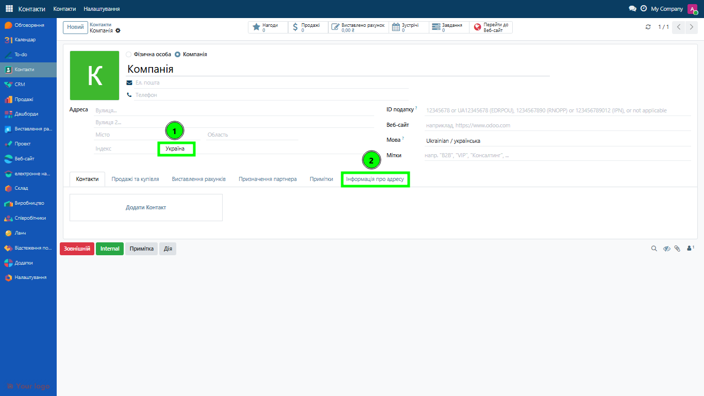
Спосіб введення адреси
Починаємо введення адреси в такій послідовності:
- Країна (Україна)
- Населений пункт
- Вулиця і будинок
Підказки з’являтимуться автоматично, щойно ви введете три або більше символів. Система звернеться до довідника і покаже відповідні варіанти, з яких можна обрати потрібний.
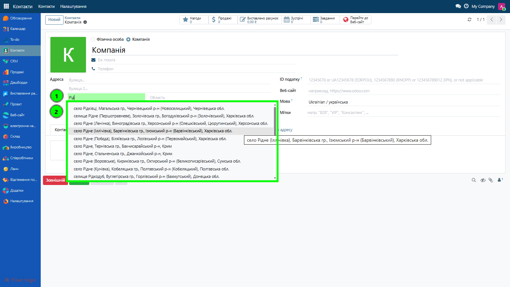
Після появи підказки ви можете обрати потрібний населений пункт.
Модуль автоматично заповнить поля «Місто» та «Область», а також покаже поля з інформацією про район і громаду.
Поруч з актуальною назвою населеного пункту в дужках відображається стара назва (до перейменування), якщо раніше відбувались перейменування.
Користувач може вводити як актуальну назву населеного пункта так і стару - модуль так само надасть відповіді правильні підказки.
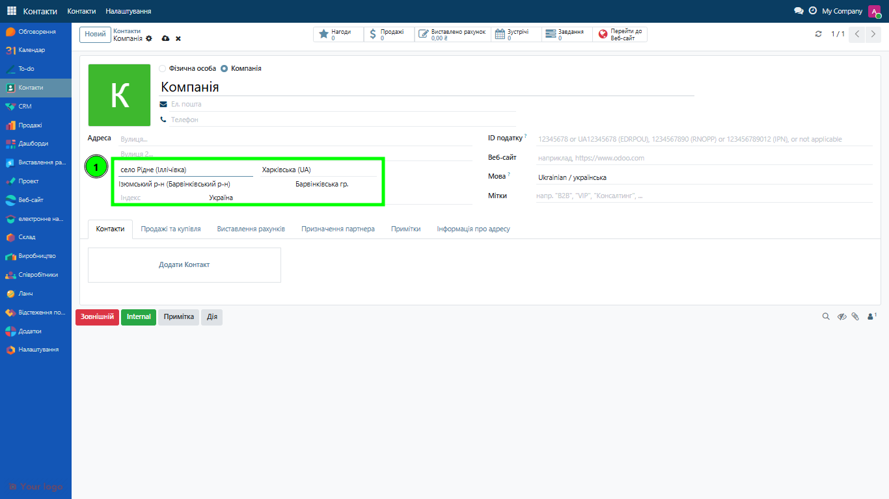
Наступним кроком вводимо назву вулиці.
Після введення трьох або більше символів система запропонує список усіх вулиць, у назві яких містяться введені символи.
Якщо ви введете стару назву, у підказках автоматично з’явиться її актуальна, нова назва, а в дужках буде зазначена стара.
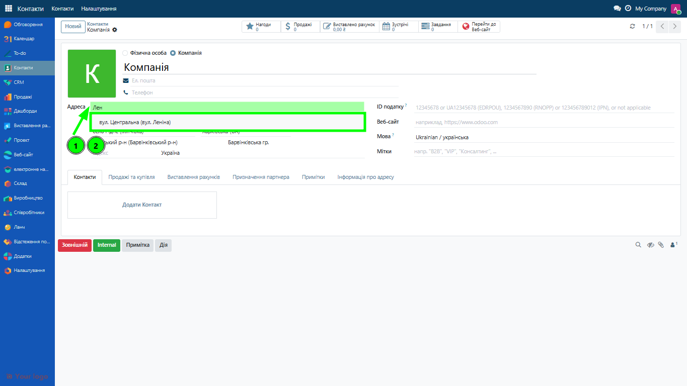
Наступний крок - це отримання номеру будинку по вибраній вулиці.
Для цього потрібно набрати цифру та отримати список із підказками по існуючим номерам будинків в довіднику.
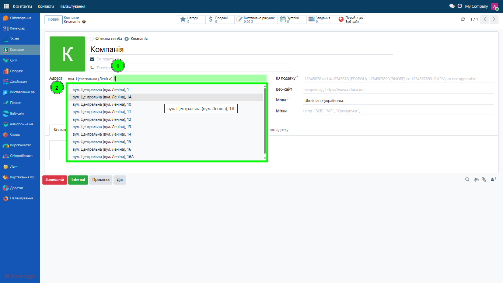
Вибравши відповідний номер будинку автоматично буде визначений та заповнений актуальний індекс цієї адреси.
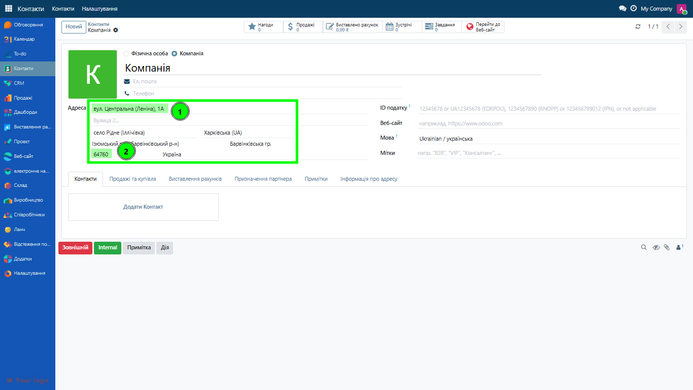
Вкладка: Інформація про адресу
На цій вкладці надається корисна інформація по адресі що ввели.
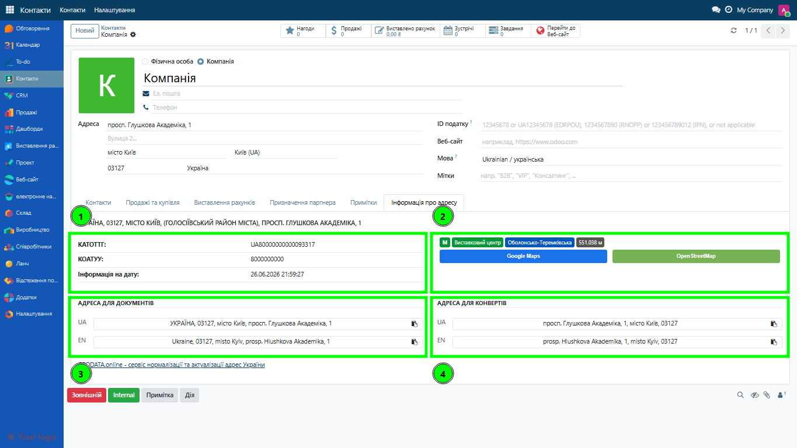
Розділ Деталі адреси показується у дві колонки, вміст яких — повністю налаштовувані HTML-шаблони (вкладка Address Templates у налаштуваннях), тож інформацію можна оформити в будь-якому вигляді. За замовчуванням:
Колонка 1:
- КАТОТТГ - Актуальний державний код територіальної одиниці за новим класифікатором після реформи.
- КОАТУУ - Старий код адміністративно-територіального устрою, що використовувався до впровадження КАТОТТГ.
- Інформація на дату - дата отримання (оновлення) адреси.
Колонка 2:
- Метро - станція, лінія та відстань кольоровими позначками.
- Кнопки перегляду на мапі - «Google Maps» та «OpenStreetMap» за координатами адреси.
- Статус території - згідно наказу «Про затвердження Переліку територій, на яких ведуться (велися) бойові дії або тимчасово окупованих російською федерацією» від 28.02.2025 № 376.
Розділ Повні адреси для документів:
- Готовий, автоматично сформований рядокдля документів. Модуль складає адресу у форматі який визначений в налаштуваннях, придатному для офіційних документів.
- Транслітерація адреси (якщо ввімкнено в налаштуваннях). Автоматично створюється англомовна версія адреси відповідно до чинних правил української транслітерації. Формат зберігає структуру української адреси, але всі елементи подаються латиницею.
Розділ Повні адреси для листів:
- Готовий, автоматично сформований рядокадреси для поштових конвертів. Модуль складає адресу у форматі який визначається користувачем (адміністратором) в налаштуваннях , згідно правил.
- Транслітерація адреси (якщо ввімкнено в налаштуваннях). Автоматично створюється англомовна версія адреси відповідно до чинних правил української транслітерації. Формат зберігає структуру української адреси, але всі елементи подаються латиницею.
Зазначені розділи прискорюють перенесення адреси в інші форми та шаблони простим натисканням кнопки.
Повна інформація про адресу
Для отримання повної інформації по адресі, а це більше 40 атрибутів, потрібно перейти на відповідну форму по посиланню (Рядок із написом адреси блока Деталі адреси).
Усі перевірені адреси також доступні списком у меню Адміністрування → Geodata.online → Addresses.
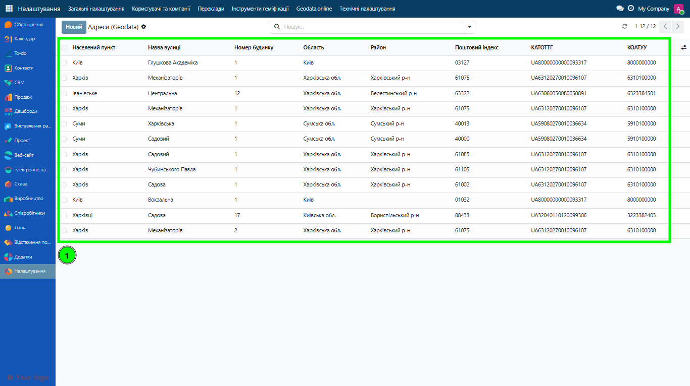
Основна інформація на сторінці згрупована в інформаційні блоки:
- Адміністративний
- Координати
- Англійська транслітерація
- Метро
- Старі назви
- Додатково
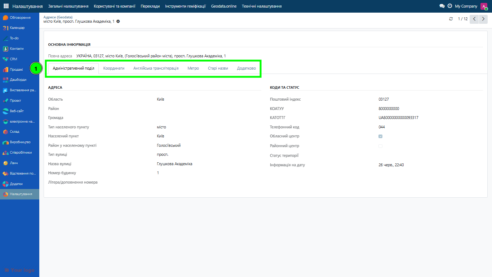
Вкладка “Адміністративний поділ”
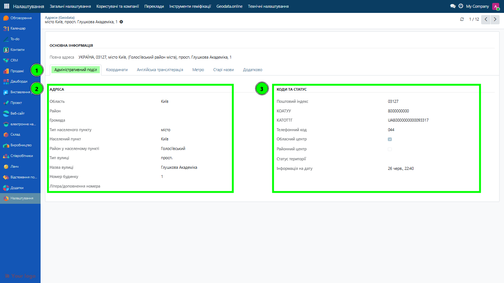
Розділ “Адреса”
|
Поле |
Опис |
|---|---|
|
Область |
Адміністративна область, до якої належить населений пункт. |
|
Район |
Район у складі області. |
|
Громада |
Територіальна громада, до якої входить населений пункт. |
|
Населений пункт |
Назва села, селища або міста. |
|
Тип населеного пункту |
Село, селище, місто. |
|
Район міста |
Внутрішній район міста (заповнюється лише для міст , в яких є міські райони). |
|
Назва вулиці |
Актуальна назва вулиці. |
|
Тип вулиці |
Вул., просп., пров., та інші. |
|
Номер будинку |
Основний номер будинку. |
|
Корпус / літера |
Додаткове позначення будинку. |
Розділ “Коди та статус”
|
Поле |
Опис |
|---|---|
|
Поштовий індекс |
Офіційний та актуальний індекс Укрпошти для цієї адреси. |
|
КОАТУУ |
Код класифікатора об’єктів адміністративно-територіального устрою. |
|
КАТОТТГ |
Актуальний код територіальної одиниці за новим класифікатором. |
|
Телефонний код |
Міжміський телефонний код населеного пункту. |
|
Обласний центр |
Позначка, чи є населений пункт центром області. |
|
Районний центр |
Позначка, чи є населений пункт центром району. |
|
Статус території |
Визначені наступні спеціальні статуси:
|
|
Дата оновлення |
Дата та час отримання (оновлення) даних по адресі. |
Вкладка “Координати”
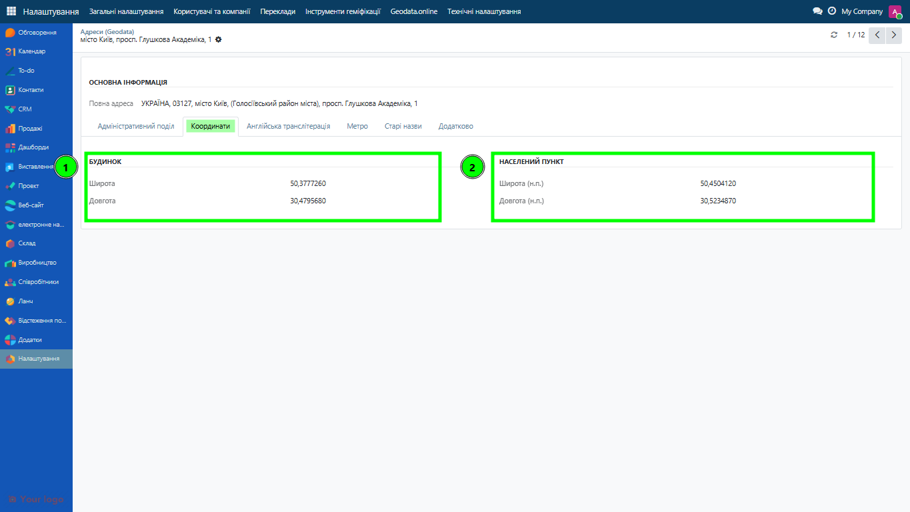
Розділ «Будинок»
Ці координати відповідають фактичній точці будівлі
|
Поле |
Опис |
|---|---|
|
Широта будівлі |
Географічна широта конкретного будівлі. |
|
Довгота будівлі |
Географічна довгота будинку. |
Розділ «Населений пункт»
Ці координати відповідають центру населеного пункту
|
Поле |
Опис |
|---|---|
|
Широта населеного пункту |
Географічна широта населеного пункту. |
|
Довгота населеного пункту |
Географічна довгота населеного пункту. |
Вкладка “Англійська транслітерація”
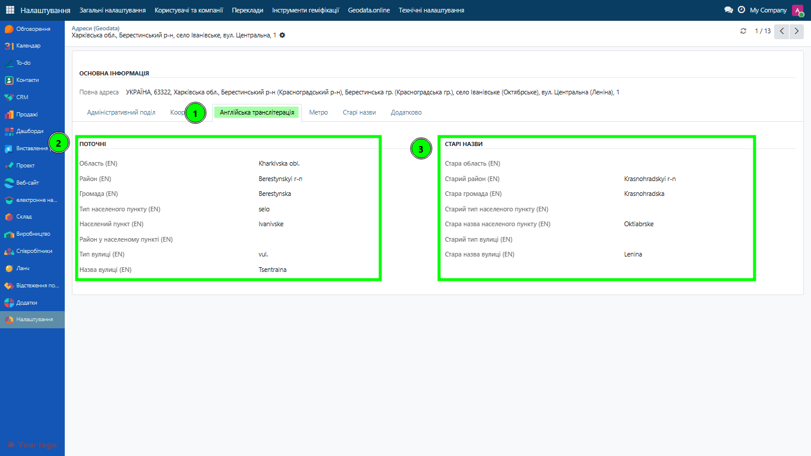
|
Поле |
Опис |
|---|---|
|
Область |
Назва області. |
|
Район |
Назва району у складі області. |
|
Громада |
Назва територіальної громади. |
|
Місто/Населений пункт |
Назва населеного пункту. |
|
Тип населеного пункту |
Тип населеного пункту. |
|
Район міста |
Район міста. |
|
Вулиця |
Назва вулиці. |
|
Тип вулиці |
Тип вулиці. |
Стара назва (англійською)
Поле | Опис |
|---|---|
Стара область | Англомовна транслітерація попередньої назви області. |
Старий район | Англомовна транслітерація попередньої назви району. |
Стара громада | Англомовна транслітерація попередньої назви громади. |
Старий тип населеного пункту | Англомовна транслітерація попереднього типу населеного пункту. |
Стара назва міста | Англомовна транслітерація попередньої назви населеного пункту. |
Старий тип вулиці | Англомовна транслітерація попереднього типу вулиці. |
Стара назва вулиці | Англомовна транслітерація попередньої назви вулиці. |
Вкладка “Метро”
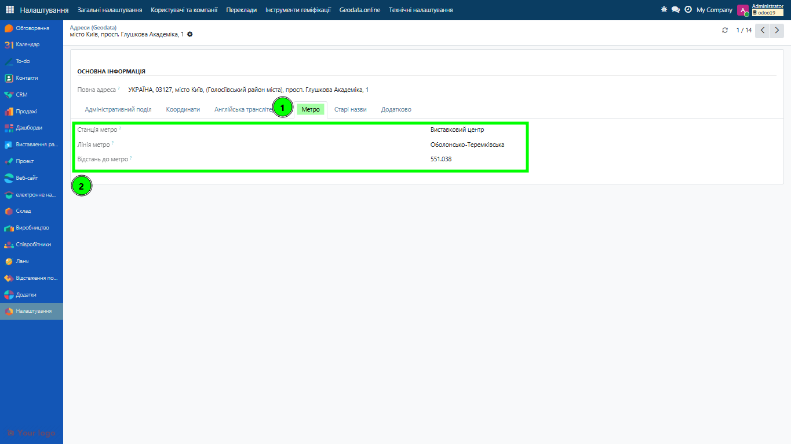
|
Поле |
Опис |
|---|---|
|
Станція метро |
Назва найближчої станції метрополітена, що відповідає цій адресі. Використовується для оцінки транспортної доступності. |
|
Лінія метро |
Назва, до якої належить обрана станція. Дозволяє уточнити розташування станції в мережі метрополітена. |
|
Відстань до метро |
Відстань від об’єкта до найближчої станції метрополітена (в метрах). |
Вкладка “Старі назви”
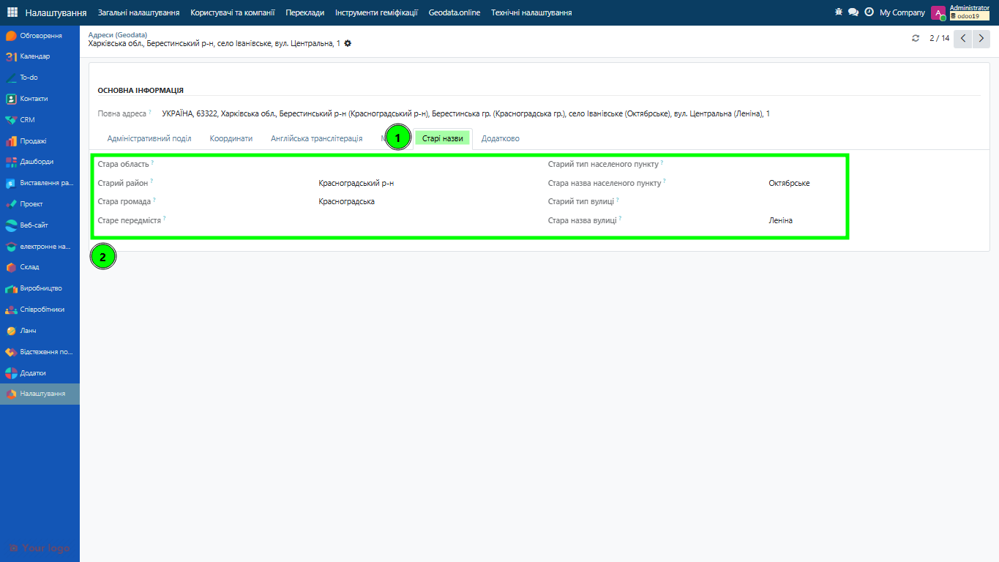
|
Поле |
Опис |
|---|---|
|
Стара назва області |
Попередня назва області. |
|
Стара назва району |
Попередня назва району. |
|
Стара назва громади |
Попередня назва громади. |
|
Стара назва передмістя |
Попередня назва передмістя (для населених пунктів, що мали передмістя). |
|
Стара назва міста |
Попередня назва населеного пункту. |
|
Старий тип населеного пункту |
Попередній тип населеного пункту. |
|
Старий тип вулиці |
Попередній тип вулиці. |
|
Стара назва вулиці |
Попередня назва вулиці. |
Вкладка “Додатково”
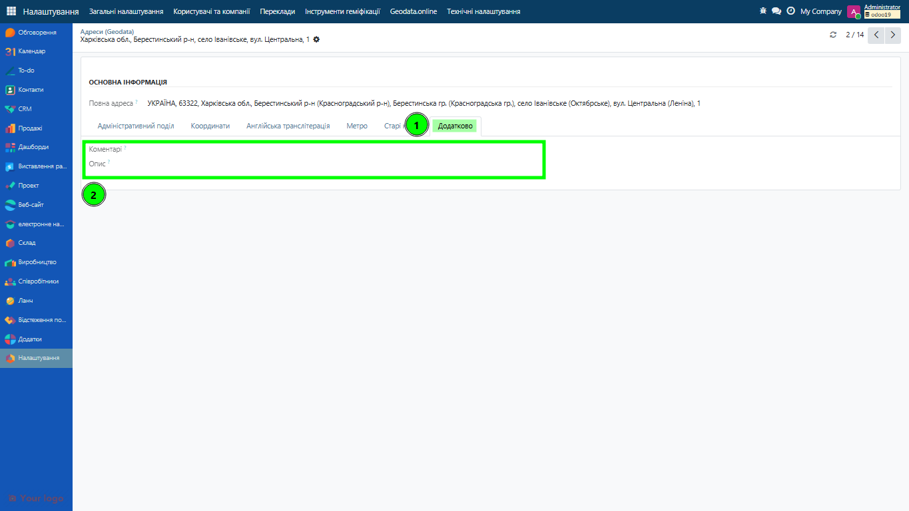
|
Поле |
Опис |
|---|---|
|
Коментарі |
Внутрішні службові коментарі щодо адреси або об’єкта. Використовуються для нотаток, уточнень, робочих позначок. |
|
Опис |
Розширений опис об’єкта або адреси. Може містити додаткову інформацію, яка не входить до стандартних полів (орієнтири, особливості розташування, примітки для користувачів). |
Конфігурація
Перший крок - реєстрація
Після встановлення модуля відкрийте меню Адміністрування → Geodata.online → API Credentials.
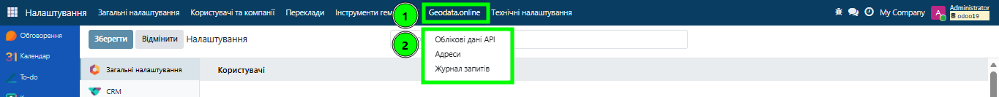
Натисніть кнопку Новий та створіть новий API Credentials.
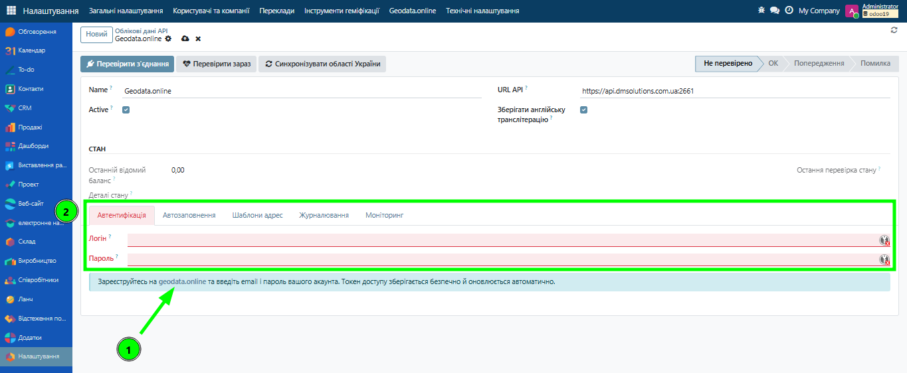
На вкладці Authentication скористайтеся посиланням на geodata.online, щоб зареєструватися в Особистому кабінеті.
Реєстрація в кабінеті Geodata.online.
Виберіть вкладку Зареєструйся та заповніть відповідні дані:

На вашу пошту буде надіслано лист для підтвердження реєстрації.
Після закінчення реєстрації поверніться на форму API Credentials і на вкладці Authentication введіть логін та пароль, використані для реєстрації на платформі Geodata.online, — токен буде отримано й оновлюватиметься автоматично.
Перевірте підключення натиснувши кнопку: Test Connection.
Оновіть список областей в довіднику Odoo кнопкою: Sync Ukraine States.
Модуль підключений до довідника і з ним можна працювати!
Налаштування форми API Credentials
Форма облікового запису (меню Адміністрування → Geodata.online → API Credentials) містить кнопки Test Connection, Check Now та Sync Ukraine States, індикатор стану (health), останній відомий баланс рахунку, а також перемикач Store English (збереження англомовної транслітерації адрес) і вкладки:
-
Authentication — логін і пароль акаунта geodata.online та адреса API (
api_url). Логін/пароль видимі лише адміністратору системи; токен зберігається й оновлюється автоматично. -
Autocomplete — мінімальна довжина запиту (
min_chars, не менше 3), затримка введення (debounce_ms) та перемикач підсвічування адрес, введених вручну (show_manual_hint). -
Address Templates — формати адреси для документів (договорів), конвертів (листів) і рядка на картці, шаблони полів адресного блока та колонок «Деталі адреси». Плейсхолдери:
{Region},{City},{Street},{HouseNum},{Index_},{KATO}тощо. - Logging — увімкнення журналу запитів до API та строк його зберігання (у днях).
- Monitoring — щоденна перевірка стану (health-check), поріг сповіщення за низького балансу та інтервал повторних сповіщень.
Доступ і безпека
Автопідказка (підказки міста/вулиці й автозаповнення) працює для будь-якого внутрішнього користувача — навіть без ролі Geodata.online, бо виконується через службовий sudo-сервіс ядра; усі внутрішні користувачі мають доступ на читання збережених адрес. Ролі додають лише адміністративні права:
- Geodata.online User — керування довідником адрес (створення та редагування записів).
- Geodata.online Manager — налаштування облікових даних API, моніторинг і журнал запитів. Логін і пароль бачить лише системний адміністратор.
Мультикомпанії
Облікові дані можуть бути спільні (без прив’язки до компанії) або окремі для кожної компанії — використовується обліковий запис компанії, а за його відсутності спільний. Збережені адреси ізольовані за компаніями правилами запису: користувач бачить лише адреси своєї компанії та спільні, а кожна адреса успадковує компанію свого власника (контакт, спільний для компаній, отримує спільну адресу).
Для розробників і адміністраторів: інтеграція в інші моделі
Адресний функціонал можна підключити до будь-якої моделі Odoo, що має адресу. Уся логіка зосереджена в міксині dm.geodata.address.mixin (ядро dm_geodata_connector) і не залежить від конкретних імен полів. Готові приклади-бриджі: Контакти (повна вкладка «Інформація про адресу»), CRM і Компанії (стандартні поля), Кадри, Банки та Обіди (нестандартні імена полів).
Рецепт тонкого модуля-бриджа
-
Маніфест:
depends = ["dm_geodata_online", "<app>"], за потребиauto_install = True. -
Модель:
_inherit = ["<model>", "dm.geodata.address.mixin"]. Якщо імена адресних полів нестандартні — перевизначте мапу_geodata_fields(напр., Кадри:private_*, Банки:state/country, Обіди:zip_code). -
Onchange: тонкі обгортки
@api.onchange(...), що викликаютьself._geodata_onchange(level)для потрібних рівнів (state/area/city/street). -
View: на полях міста й вулиці —
widget="geodata_autocomplete"з відповіднимиoptions; індикатор на полі індексу; поляarea/hromadaпісля області; приховані контрольні поля; гейт видимості заcountry_code. -
Для
res.companyдодатково перевизначте_geodata_company_id()(адреса належить самій компанії).
Опції віджета geodata_autocomplete:
Опція | Призначення |
|---|---|
| Метод-джерело підказок (напр. |
| Метод застосування вибраної підказки (зазвичай |
| Поле-прапорець підтвердженості значення (для індикатора «введено вручну»). |
| Поле, що вмикає підказку про ручне введення. |
| Мінімальна довжина запиту перед пошуком (≥ 3). |
| Затримка перед запитом, мс. |
Докладний рецепт і приклади — у README ядра dm_geodata_connector.
Підтримка
Якщо у вас є питання - зв’яжіться із нами:
support@geodata.online
Офіційний сайт: